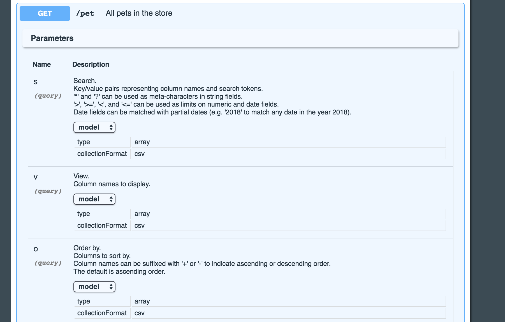

Expanding operations shows you a list of parameters:

The parameters annotation is a free-form Simple JSON field that allows you to add arbitrary
parameter information to your resource.
In this case, we pull from a common field defined in the {@link oajr.converters.Queryable} converter class:
Note that this information could have also been defined in the Swagger JSON for the resource as well.
The Swagger can also be defined via annotations on parameters directly, as shown below:
Note: The type and collectionFormat values above are optional and auto-detected based on the
parameter class type if omitted.